Macro-Driven Trade Ideas
Marrying the macro and the micro: turning a leading indicator into single-stock long and short ideas
Leading indicators don't just set a portfolio bias — they hand you individual stock ideas. This chapter walks the full macro-to-micro chain: an ISM inflection, a sector divergence, and a cross-sector spread that timed a takeover almost to the day.
The gist
- Leading indicators generate single-stock trade ideas, not just a portfolio bias — the macro-to-micro marriage is repeatable on ISM services, building permits, cyclical commodities and corporate credit spreads.
- April 2021 was a peak-with-cracks inflection: Manufacturing PMI 60.7, down -4.0 from the March 64.7 peak; New Orders 64.3, Production 62.5, Employment 55.1, Supplier Deliveries 75.0 — and Inventories flipping to 46.5 (Contracting from Growing, the key change) versus 50.8, while Prices ran to 89.6 (+4.0).
- Overall Economy and Manufacturing Sector both read Growing / Slower / 11-month trend — still expansion, but the rate of change is decelerating and inventories are contracting for the first month.
- Rank the 18 industries by growth each month and build a 6-month matrix (aggregate + New Orders + Inventories) to hunt RELATIVE divergence between sectors.
- The chosen cross-sector spread: LONG Furniture & Related Products (rank 2 -> 12 -> 16) versus SHORT Transportation Equipment (rank 10 -> 6 -> 5) — divergence at the aggregate, New Orders and Inventories levels.
- SHORT screen (Transportation Equipment, $30bn cap floor since shorting): sector averages EG1 46.83% / EG2 38.87% / PE1 29.26 / PE2 24.44 / PEG1 1.63 / PEG2 1.21; pure plays TDG ($33.25bn, EG1 -21.56% / EG2 49.07%, PE1 50.80 / PE2 34.08 premium turnaround) and PCAR ($32.81bn, EG1 56.31% / EG2 20.19%, PE1 15.56 / PE2 12.95 discount).
- LONG screen (Furniture, $3-10bn band): sector averages EG1 79.11% / EG2 21.01% / PE1 22.71 / PE2 18.60 / PEG1 0.71 / PEG2 1.81; chose HOME (At Home Group, $2.41bn, SP $25.19, EG1 -40.23% / EG2 15.49%, PE1 15.73 / PE2 13.62 turnaround + tailwind), excluding RH ($14.72bn) and WSM ($14.06bn) as too big and PRPL ($2.03bn, EG1 311.43%) / BBBY ($2.77bn, EG1 100.00%) as small-number EG skew.
- Outcome: HOME +~27% in April then a Hellman & Friedman takeover for +34.89% total, versus TDG ~flat (+0.75-1%) and PCAR ~-3% in April — the discount-PE short read on PCAR validated. ISM = clues not a rulebook; aim for ~2 fresh ideas a week because inventory is the oxygen of a long/short book.
The macro-micro marriage
- Earlier in PTM the leading indicators were used primarily to obtain a PORTFOLIO BIAS; here they are used to generate trade ideas in individual equities.
- The goal is to take macro data that drives the performance of individual stocks and connect it to forward-looking valuation and growth at the micro (sector quant) level.
- The same processes shown on ISM manufacturing repeat on the ISM non-manufacturing (services) report, and ideas can also come from building permits, cyclical commodities prices and corporate credit spreads.
The first step is always to establish a trend or a CHANGE of trend in the macro data, then marry it to stocks whose forward-looking valuations and growth profiles agree with that macro read.
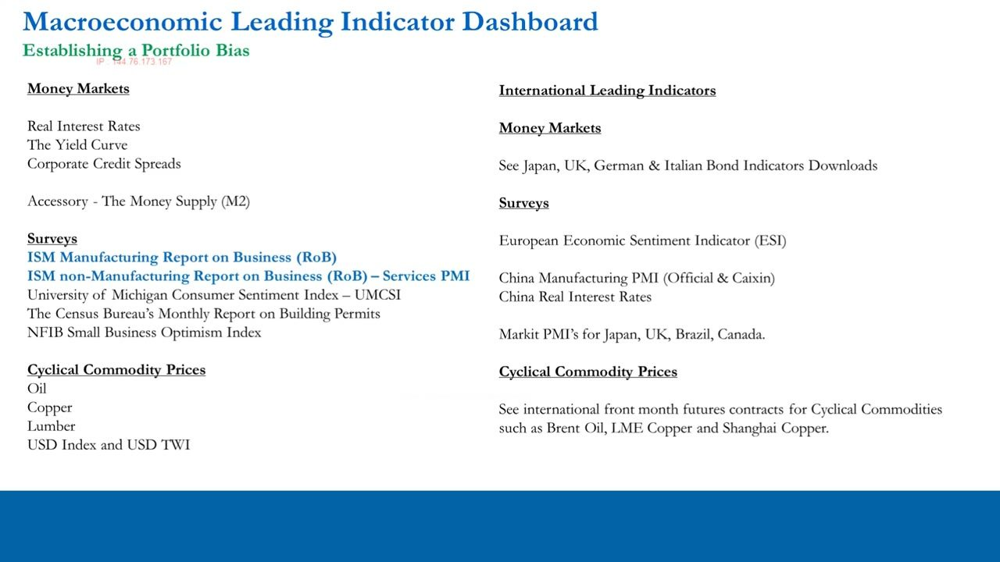
Spotting the inflection on the chart
- The ISM manufacturing history runs back to 1998 on this chart; the most recent peak circled is March 2021.
- Sitting at the beginning of April you would only have the March number (reported first business day of April) — a very high 64.7 that looks like it can go no higher.
- You would infer you are nearing an inflection point and the only way is down; the April number (reported first week of May) then confirms the turn.
Reading the picture first sets the hypothesis; the tables then confirm the turning point and a possible new trend.
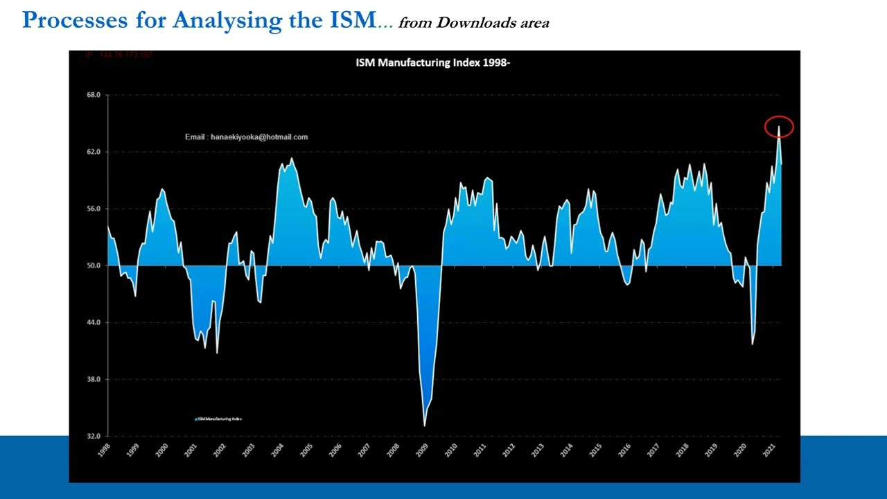
Manufacturing at a Glance — April 2021
- Headline PMI 60.7, down -4.0 from the March peak of 64.7 — a sharp slowdown but still above 50, so Growing / Slower / 11-month trend.
- New Orders 64.3 (from 68.0), Production 62.5, Employment 55.1, Supplier Deliveries 75.0 — all contributing to the aggregate drop.
- Inventories are the key change: 46.5, dropping from 50.8, flipping direction to CONTRACTING from Growing — the first month of that change.
- Prices ran the other way to 89.6, up +4.0; Overall Economy and Manufacturing Sector both read Growing / Slower / 11-month.
These are peak conditions with cracks appearing — the aggregate is still expanding but decelerating, and the inventory drawdown flipping to contraction is the tell.
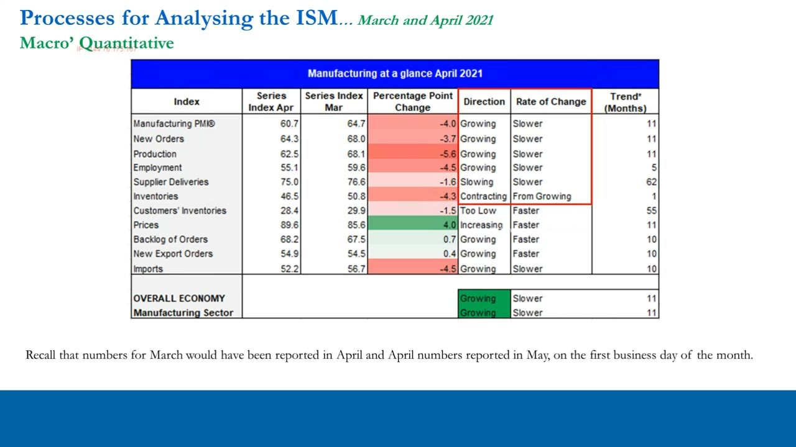
Reading direction and rate of change
- For each series read three things: direction (above/below 50), rate of change (faster/slower), and the trend in months.
- New Orders often leads the component index, so a slowdown there is an early warning for the aggregate.
- The one series that changes DIRECTION — Inventories from Growing to Contracting — is where the real information sits this month.
Every month you go through these steps to infer what is happening in the PMI and its component parts, feeding the aggregate read into your portfolio bias.
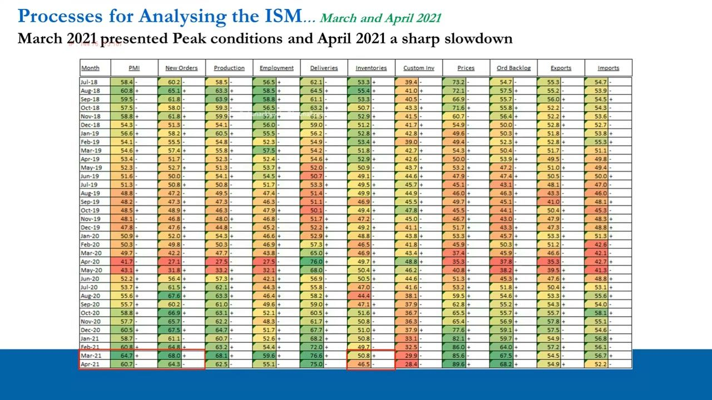
Rank the 18 industries for divergence
- The 18 industries are ranked each month from the sector growing the most to the sector growing the least or contracting, by the most recent month.
- You look at the extremities and, crucially, at RELATIVE divergence between sectors over a 6-month matrix.
- This example marries a LONG in Furniture & Related Products against a SHORT in Transportation Equipment — by default a cross-sector spread trade.
You are doing pattern recognition for longs and shorts: divergence on a relative basis between two sectors is what gets your interest.
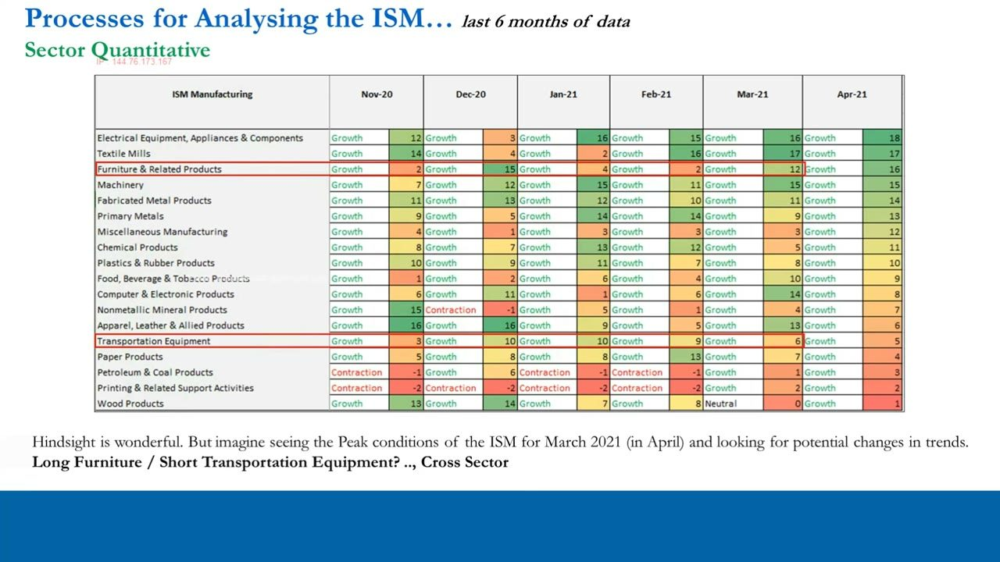
New Orders confirms the divergence
- Furniture & Related Products New Orders go from zero (neutral, Feb 21) to a ranking of 10 on relative growth in March 21.
- Transportation Equipment New Orders drop from a ranking of 8 in February to 4 in March — down four rankings.
- The Inventories matrix confirms the same split: Furniture builds inventory into expected demand while Transportation Equipment goes to a -3 contraction ranking.
Drilling into New Orders and Inventories tells you WHERE the divergence is coming from — Furniture building for growth, Transportation contracting.
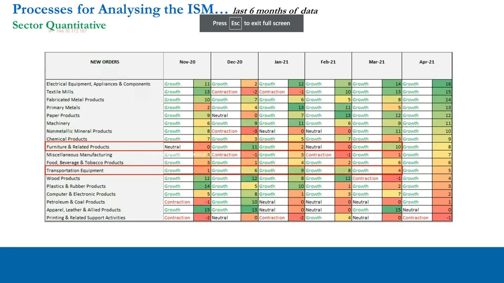
The SHORT screen: Transportation Equipment
- Data cleaned as of March 1, 2021 with a minimum $30bn market-cap filter applied, because we are shorting.
- Sector averages: EG1 46.83%, EG2 38.87%, PE1 29.26, PE2 24.44, PEG1 1.63, PEG2 1.21.
- Discretion narrows to the PURER plays: TDG (TransDigm, aircraft components) and PCAR (Paccar, trucks & parts) — least diversified revenue/earnings, most potential downside.
The quant identifies potential plays, but you use discretion to isolate the purest, least-diversified names that will get hurt most if the sector keeps deteriorating.
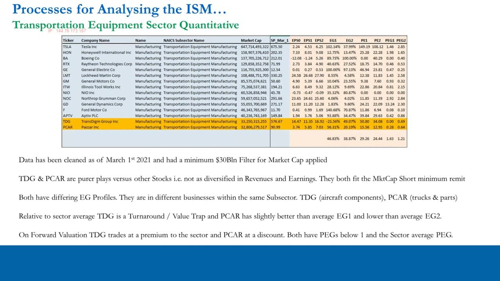
TDG vs PCAR: premium turnaround vs discount
- TDG market cap $33.25bn: EG1 -21.56% / EG2 49.07%, PE1 50.80 / PE2 34.08 — a turnaround or value-trap trading at a PREMIUM to the sector.
- PCAR market cap $32.81bn: EG1 56.31% / EG2 20.19%, PE1 15.56 / PE2 12.95 — slightly better EG1, lower EG2, trading at a DISCOUNT.
- Both carry PEGs below 1 and below the sector-average PEG; both are negative outliers as a short if the ISM backdrop keeps deteriorating.
You want to be short either the worst or very close to the worst stocks in the sector, because the ISM conditions feed into revenue and earnings after a lag.
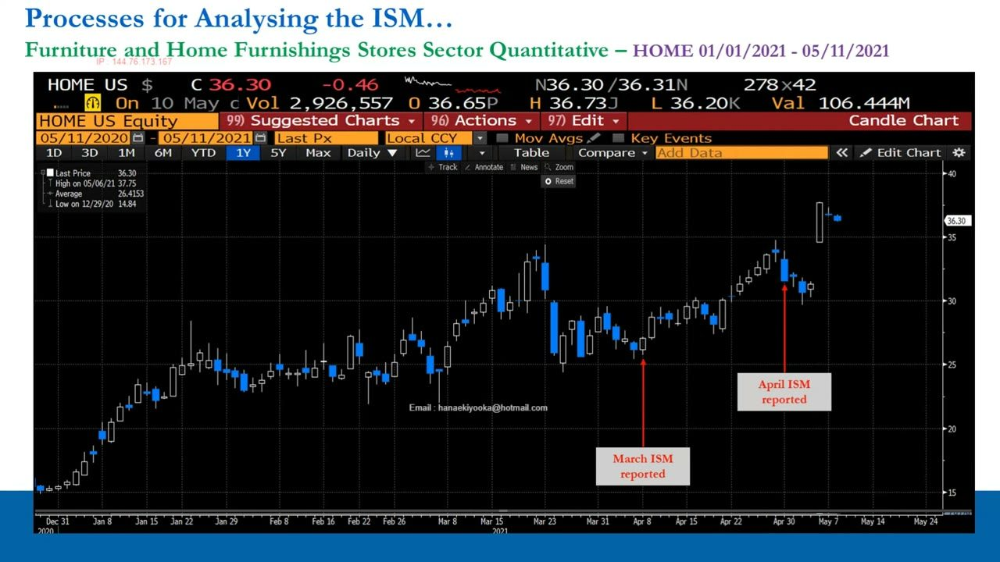
The LONG screen: Furniture & home furnishings
- Data cleaned as of March 1, 2021; no market-cap minimum or maximum on the screen, but the self-imposed long band is $3-10bn.
- Sector averages: EG1 79.11%, EG2 21.01%, PE1 22.71, PE2 18.60, PEG1 0.71, PEG2 1.81.
- RH ($14.72bn) and WSM/Williams-Sonoma ($14.06bn) are excluded as too big; PRPL/Purple Innovation ($2.03bn, EG1 311.43%) and BBBY/Bed Bath & Beyond ($2.77bn, EG1 100.00%) skew the EG average via the laws of small and negative numbers.
That filtering leaves At Home Group (HOME) as the clean long candidate — a similar turnaround profile to TDG but with a sector TAILWIND instead of a headwind.
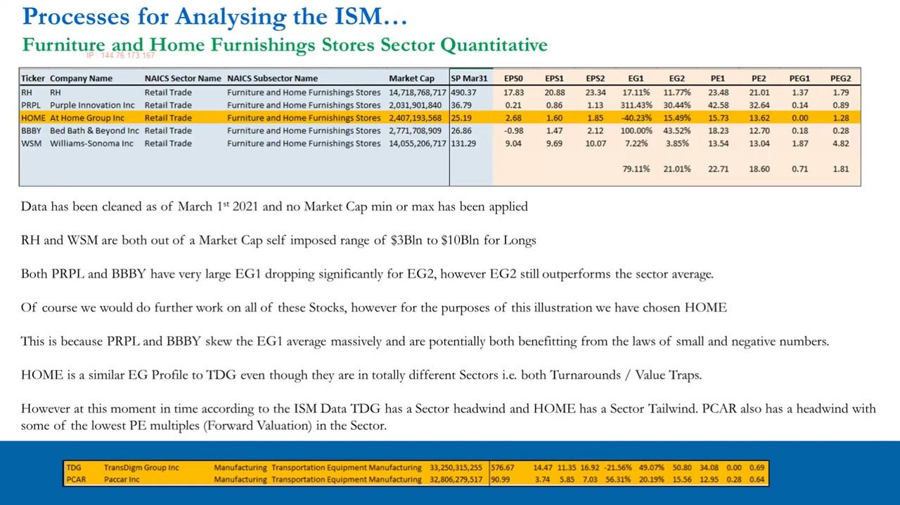
At Home Group (HOME) — the chosen long
- HOME: $2.41bn market cap, share price $25.19, EG1 -40.23% / EG2 15.49%, PE1 15.73 / PE2 13.62 — a turnaround with a sector tailwind.
- A US home-decor retailer: furniture, home furnishings, wall decor, decorative accents, rugs and housewares — a straightforward pure-play operation.
- In April the stock ran from about $26 to around $33 (a ~$7 move on a ~$26 base, ~27% in one month) after the March ISM was reported.
The stock's move maps onto the exact ISM reporting dates — the March number in the first week of April, the April number at the beginning of May.
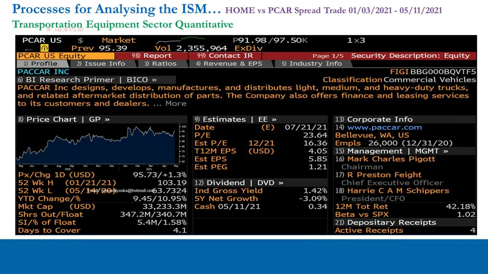
The takeover and the outcome
- The gap up from ~$33 to ~$36 at the start of May was a takeover announcement: private-equity firm Hellman & Friedman bid for At Home Group.
- Total performance: HOME +34.89% after the April ISM and the takeover, versus TDG a 75bp-to-~1% move (essentially flat) over the whole period.
- PCAR fell roughly -3% in April (from ~$92.50 to ~$90), performing worse than TDG — validating the discount forward-PE short read; you would most likely have chosen PCAR as the short.
The processes you run are the same ones the smart money runs, so you can arrive at the same names at the same time — occasionally, as here, with a catalyst landing inside your 20-60 day horizon.
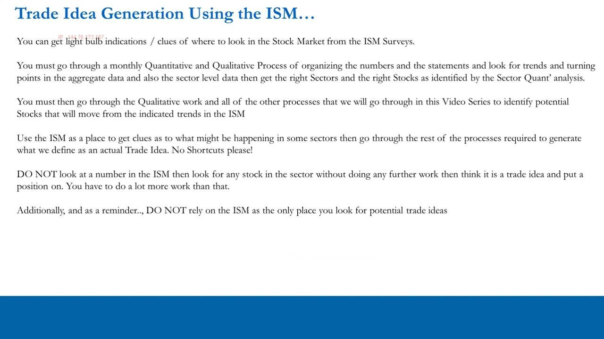
Discipline: clues, not a rulebook
- The ISM gives light-bulb clues about where to look — it is not a plug-and-play rulebook; don't jump the gun or take shortcuts.
- A real trade idea still needs the full quant + qualitative + technicals/price-action work and the trade-idea template; never rely on the ISM as your only idea source.
- Your trade ideas are your inventory, and inventory is the oxygen of a long/short book — target ~2 fresh, high-quality ideas per week, done as a self-starter.
Remember the four principles of ITPM: this is an identification process, not an execution rulebook — sector trend, sector divergence, then quant identification of positive and negative outliers, married up.
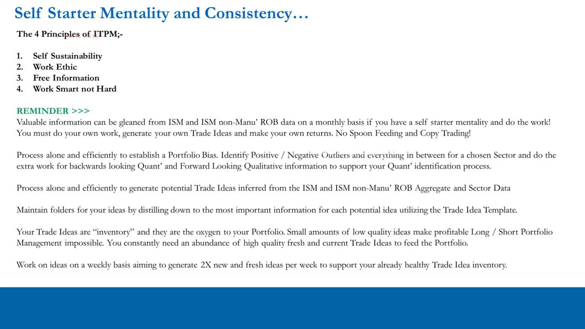
Glossary
- ISM Manufacturing PMIThe Institute for Supply Management's monthly manufacturing survey; above 50 = expansion, below 50 = contraction. April 2021 read 60.7, down -4.0 from the March peak of 64.7.
- Macro-to-micro marriageUsing a macro leading indicator (like the ISM) to generate individual single-stock trade ideas, rather than only to set a portfolio bias.
- Sector divergenceA relative split in the ISM industry rankings between two sectors over a 6-month matrix (aggregate, New Orders, Inventories) — the trigger to consider a long in one and a short in the other.
- Cross-sector spreadA trade that is long one sector's stock and short another's — here Long Furniture & Related Products vs Short Transportation Equipment.
- EG1 / EG2Forward earnings growth: EG1 = current-year EPS growth (2021 vs 2020), EG2 = next-year growth (2022 vs 2021).
- PE1 / PE2Forward price-earnings ratios for the current (PE1, 2021) and next (PE2, 2022) financial years.
- PEG1 / PEG2Forward PEG ratios (PE divided by earnings growth) for the current and next financial years; below 1 flags relatively cheap growth.
- Pure playA company whose revenue and earnings are concentrated in one business, not highly diversified — the purest exposure to a sector's move, so the most potential up or downside.
- Turnaround / value trapA stock with a depressed near-term earnings profile (negative or weak EG1) that may either recover (turnaround) or keep declining (value trap) — TDG and HOME both fit this shape.
- Small/negative-number skewThe laws of small and negative numbers inflating percentage EG figures (e.g. PRPL EG1 311.43%, BBBY EG1 100.00%), distorting a sector's average growth.